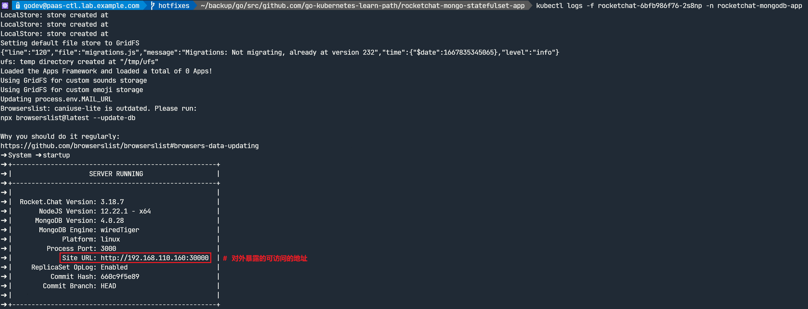
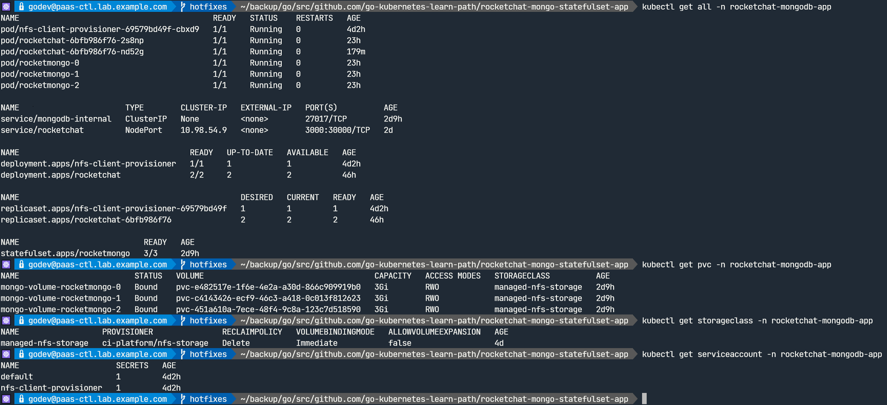
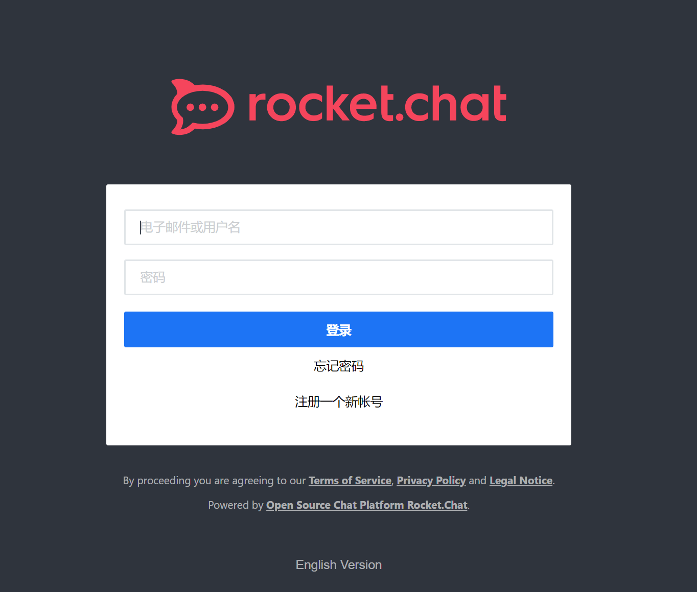

部署环境说明：
- Kubernetes 版本：
v1.22.1 - Rocket.Chat 容器镜像版本：
docker.io/rocketchat/rocket.chat:3.18.7 - MongoDB 容器镜像版本：
docker.io/library/mongo:4.0 - Kubernetes NFS-Client Privisioner 容器镜像版本：
quay.io/external_storage/nfs-client-provisioner:latest - 👉 若拉取失败，以上镜像均可从 https://quay.io/user/alberthua 中拉取下载。
- 🔗 点击 链接，以获得部署用的相关文件。
部署方式及步骤：
- 💥 该应用后端的 MongoDB 集群使用
NFS作为动态 PV 的提供者，需提前配置 NFS 服务器节点用于提供 PV（见下文）。 - 然而，Kubernetes 中未集成 NFS 类型的内部调配者（
internal privisioner），因此需使用nfs-client-provisioner将外部 NFS 调配至集群以支持 PV 动态分配。 - PV 动态分配还需使用
StorageClass资源将privisioner对接入 Kubernetes 集群。 - 🚀 StorageClass 调用链：
Pod > PVC > StorageClass > provisioner (PV 动态分配) > NFS Server - MongoDB 集群使用
StatefulSet部署，而该资源需使用StorageClass实现卷声明模板（volumeClaimTemplates）。 nfs-client-provisioner 在集群中的部署可参考该 链接，也可参考如下步骤实现：
登录
NFS服务器节点创建 NFS 共享目录：1
2
3
4
5
6
7
8
9
10
11
12
13
14
15
16$ yum install -y nfs-utils
$ systemctl enable --now nfs-server.service
$ mkdir -p /data/k8s
$ chmod -R 0777 /data/k8s
$ echo "/data/k8s 192.168.110.0/24(rw,sync,no_root_squash)" > /etc/exports.d/kubecluster.exports
# 共享目录与存储网段需根据实际情况而定
# 注意：
# 共享目录的名称必须与 nfs-client-provisioner Deployment 中的 path 字段
# 完全相同！
$ exportfs -a
$ showmount -e localhost
Export list for localhost:
/data/k8s 192.168.110.0/24
$ mkdir /data/k8s/rocketchat-mongodb-app
# 以上目录名称中的 rocketchat-mongodb-app 为命名空间的名称
$ chmod 0777 /data/k8s/rocketchat-mongodb-app📢 报错示例 1：
确认集群各节点已安装nfs-utils软件包，若未安装在部署nfs-client-provisionerpod 时将返回如下报错，pod 状态持续显示为ContainerCreating：1
2
3
4
5
6
7
8
9
10
11
12
13
14
15
16$ kubectl describe pod nfs-client-provisioner-8b9f4fbcc-rrw8r -n rocketchat-mongodb-app
...
Events:
Type Reason Age From Message
---- ------ ---- ---- -------
Normal Scheduled 77s default-scheduler Successfully assigned rocketchat-mongodb-app/nfs-client-provisioner-8b9f4fbcc-rrw8r to kube-node2.lab.example.com
Warning FailedMount 12s (x8 over 76s) kubelet MountVolume.SetUp failed for volume "nfs-client-root" : mount failed: exit status 32
Mounting command: mount
Mounting arguments: -t nfs 192.168.110.162:/data/k8s/rocketchat-mongodb-app /var/lib/kubelet/pods/393e67de-39ed-4d17-aeca-9f2ebe360199/volumes/kubernetes.io~nfs/nfs-client-root
Output: mount: wrong fs type, bad option, bad superblock on 192.168.110.162:/data/k8s/rocketchat-mongodb-app,
missing codepage or helper program, or other error
(for several filesystems (e.g. nfs, cifs) you might
need a /sbin/mount.<type> helper program)
In some cases useful info is found in syslog - try
dmesg | tail or so.📢 报错示例 2：
使用 nfs-client-provisioner pod 实现动态 PV 分配时，必须提前在 NFS Server 上创建与调整以命名空间名称为basename的共享目录（如上所示），否则将返回如下报错，显示无法找到目录：1
2
3
4
5
6
7
8
9
10
11...
Events:
Type Reason Age From Message
---- ------ ---- ---- -------
Normal Scheduled 18m default-scheduler Successfully assigned rocketchat-mongodb-app/nfs-client-provisioner-8b9f4fbcc-j9z24 to kube-node2.lab.example.com
Warning FailedMount 14m (x2 over 16m) kubelet Unable to attach or mount volumes: unmounted volumes=[nfs-client-root], unattached volumes=[kube-api-access-rhqq9 nfs-client-root]: timed out waiting for the condition
Warning FailedMount 47s (x6 over 12m) kubelet Unable to attach or mount volumes: unmounted volumes=[nfs-client-root], unattached volumes=[nfs-client-root kube-api-access-rhqq9]: timed out waiting for the condition
Warning FailedMount 20s (x17 over 18m) kubelet MountVolume.SetUp failed for volume "nfs-client-root" : mount failed: exit status 32
Mounting command: mount
Mounting arguments: -t nfs 192.168.110.162:/data/k8s/rocketchat-mongodb-app /var/lib/kubelet/pods/7cad43c0-0e08-4e07-b0e8-5bba0a535c4d/volumes/kubernetes.io~nfs/nfs-client-root
Output: mount.nfs: mounting 192.168.110.162:/data/k8s/rocketchat-mongodb-app failed, reason given by server: No such file or directory
💥 nfs-client-provisioner pod 与应用 pod 部署于同一命名空间中。
因此，该应用的部署方式如下所示：
1
2
3
4
5
6
7
8
9$ kubectl create namespace rocketchat-mongodb-app
$ kubectl apply -f \
00-nfs-provisioned-rbac.yml \
01-nfs-provisioned-deployment.yml \
02-nfs-provisioned-class.yml \
-n rocketchat-mongodb-app
$ kubectl apply -f 03-mongodb-internal-headless-svc.yml -n rocketchat-mongodb-app
$ kubectl apply -f 04-mongodb-statefulset.yml -n rocketchat-mongodb-app
# 该资源创建完成后并未实现 MongoDB 的 ReplicaSet 模式集群，需登录至其中的一个节点实现集群的初始化及 mongo 节点的添加。1
2
3
4
5
6
7
8
9
10
11
12
13
14
15
16
17
18
19
20
21
22
23
24
25
26
27
28
29
30
31$ kubectl exec -it rocketmongo-0 -n rocketchat-mongodb-app -- mongo
# 进入 mongo 节点进行集群的初始化与配置
...
> rs.initiate() # 初始化集群
{
"info2" : "no configuration specified. Using a default configuration for the set",
"me" : "rocketmongo-0:27017",
"ok" : 1
}
rs0:SECONDARY> var config = rs.conf()
rs0:PRIMARY> config.members[0].host="rocketmongo-0.mongodb-internal:27017"
rocketmongo-0.mongodb-internal:27017
# 通过 headless service 指向 mongo 节点，将该节点配置为 primary 节点。
rs0:PRIMARY> rs.reconfig(config) # 刷新集群配置
{
"ok" : 1,
"operationTime" : Timestamp(1671036342, 1),
"$clusterTime" : {
"clusterTime" : Timestamp(1671036342, 1),
"signature" : {
"hash" : BinData(0,"AAAAAAAAAAAAAAAAAAAAAAAAAAA="),
"keyId" : NumberLong(0)
}
}
}
rs0:PRIMARY> rs.add("rocketmongo-1.mongodb-internal:27017")
rs0:PRIMARY> rs.add("rocketmongo-2.mongodb-internal:27017") # 添加额外的 mongo 节点
rs0:PRIMARY> rs.status() # 查看集群的状态
rs0:PRIMARY> rs.isMaster() # 确认当前 mongo 节点是否为 primary 节点
rs0:PRIMARY> exit # 退出 MongoDB Shell
...1
2$ kubectl apply -f 05-rockerchat-deployment.yml -n rocketchat-mongodb-app
# 部署前端 Rocket.Chat 应用🤘 如下所示，刷新 Rocket.Chat pod 日志可确认其与 MongoDB 集群成功连接：
确认应用资源与登录认证：
该应用所涉及的资源对象如下所示：
1
2
3
4
5
6
7
8
9
10
11$ kubectl get pv
NAME CAPACITY ACCESS MODES RECLAIM POLICY STATUS CLAIM STORAGECLASS REASON AGE
pvc-1bc91589-312c-4878-af37-5e31a7dacc33 3Gi RWO Delete Bound rocketchat-mongodb-app/mongo-volume-rocketmongo-0 managed-nfs-storage 21h
pvc-aebc940f-f3f2-4389-8d8b-62695dd931b6 3Gi RWO Delete Bound rocketchat-mongodb-app/mongo-volume-rocketmongo-1 managed-nfs-storage 21h
pvc-cd42e48c-ab33-481c-a9dd-eae73c876516 3Gi RWO Delete Bound rocketchat-mongodb-app/mongo-volume-rocketmongo-2 managed-nfs-storage 21h
$ kubectl get pvc -n rocketchat-mongodb-app
NAME STATUS VOLUME CAPACITY ACCESS MODES STORAGECLASS AGE
mongo-volume-rocketmongo-0 Bound pvc-1bc91589-312c-4878-af37-5e31a7dacc33 3Gi RWO managed-nfs-storage 21h
mongo-volume-rocketmongo-1 Bound pvc-aebc940f-f3f2-4389-8d8b-62695dd931b6 3Gi RWO managed-nfs-storage 21h
mongo-volume-rocketmongo-2 Bound pvc-cd42e48c-ab33-481c-a9dd-eae73c876516 3Gi RWO managed-nfs-storage 21h
# 查看 PV 动态分配的资源👉 NFS 服务器上 PV 的命名格式：
${namespace}-${pvcName}-${pvName}
👉 PV 回收时候的命名格式：archieved-${namespace}-${pvcName}-${pvName}- 可通过 Rocket.Chat pod 日志中的 URL 链接登录应用并注册账户使用。
参考链接：
- 利用 NFS 动态提供 Kubernetes 后端存储卷
- Running MongoDB on Kubernetes with StatefulSets
- Running Rocket.Chat and MongoDB on Kubernetes with StatefulSets
- Deploy Rocket chat server using Kubernetes